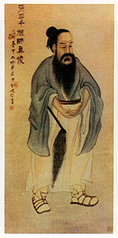
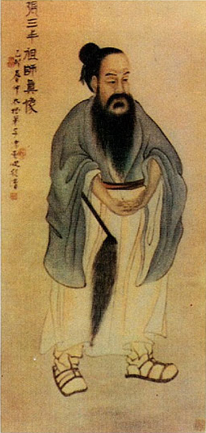
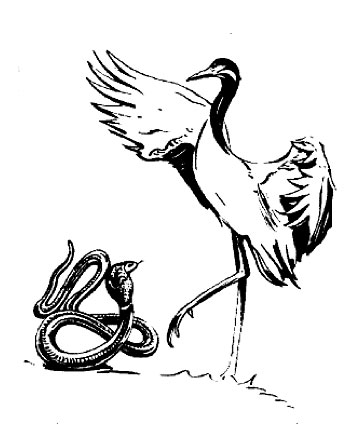
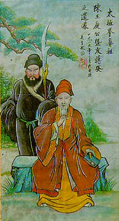
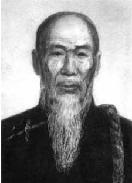
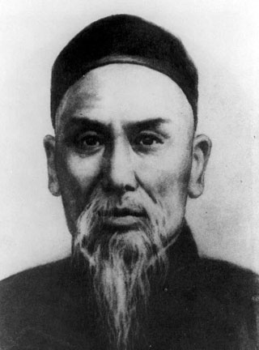
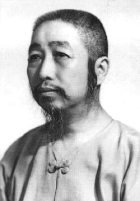

T’ai Chi History—The Daoist Legend
Zhang Sanfeng
Zhang Sanfeng was a 12th century Daoist (some date to 10th century) that happened upon a fight between a crane and a snake. Afterwards, Zhang contemplated upon this experience and developed a new Martial Art form that relied upon Internal Power, or Chi, at its root. This art held as its foundation the Truth that 'yielding overcomes aggression' and 'softness overpowers hardness'. He called his art Tai Chi Chuan, the 'Grand Ultimate Fist'.
- There are many variations to this legend:
- Some stories claim he was Buddhist and from the Shaolin Temple.
- Founder of the Daoist monasteries and traditions in the Wudang Mountains.
- Not credited as founder of T'ai Chi until the 19th century.
Zhang Sanfeng Lineage
- Zhang Sanfeng
- Zhang Sungqi
- Wang Congyue
- Jiang Fa
- Chen Changxin (14th generation Chen)
- Yang Luchan
Historical Records
- T'ai Chi came from the Chen family village.
- Chen Wangting (1600-1680)
- 9th generation Chen family patriarch.
- Existing Chen family martial arts.
- Combined with other martial arts of Shaolin origin.
- Added principles of Chinese Medicine (jingluo and jingmai theory).
- Also added daoyin and tuna (deep breathing).
The Jiang Fa Connection
- Jiang Fa was a servant in the Chen village, but was very good friends with Chen Wangting.
- Many sources link Jiang Fa with Chen Changxing (14th generation).
- Unclear what impact Jiang Fa may have had.
Chen Changxing (1771–1853)
- 14th generation Chen family.
- Took existing forms and combined them into two sets.
- Now called laojia (old frame).
- xinjia (new frame) – Chen Fake, 17th generation Chen family.
- Taught his servant Yang Luchan.
Yang Style T'ai Chi (1799–1872).
- Founded by Yang Luchan
- Moved to Beijing.
- 1st to publicly teach t’ai chi.
- Famous fighter (Yang the Invincible).
- "softened" over the years.
- Most popular and widely practiced style of t'ai chi.
Zheng Manqing (1902–1975)
- Studied with 3rd generation Yang style leader Yang Chengfu.
- Master of the five excellences.
- Chinese medicine, martial arts, calligraphy, painting, poetry.
- Created the 37-move short form.
- This form is taught at OMHS.
The Other 3 Styles of T'ai Chi
- Wu Hao style is 2 generations removed from 14th generation Chen style leader Chen Changxing and founded by Wu Yuxiang (1812–1880).
- Sun style founder Sun Lutang (1861–1932) came from the Wu Hao lineage.
- Wu style founder Wu Quanyou (1834–1902) studied with Yang Luchan and his son Yang Banhou.
Zhang Sanfeng (enlarged)
Crane and Snake
Jiang Fa
Chen Changxing
Yang Luchan
Zheng Manqing